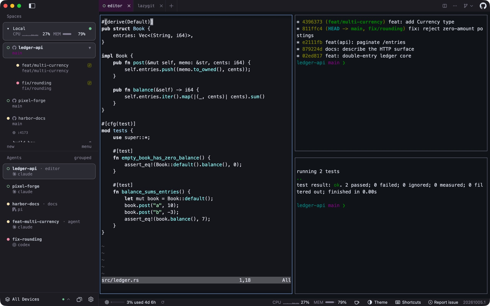
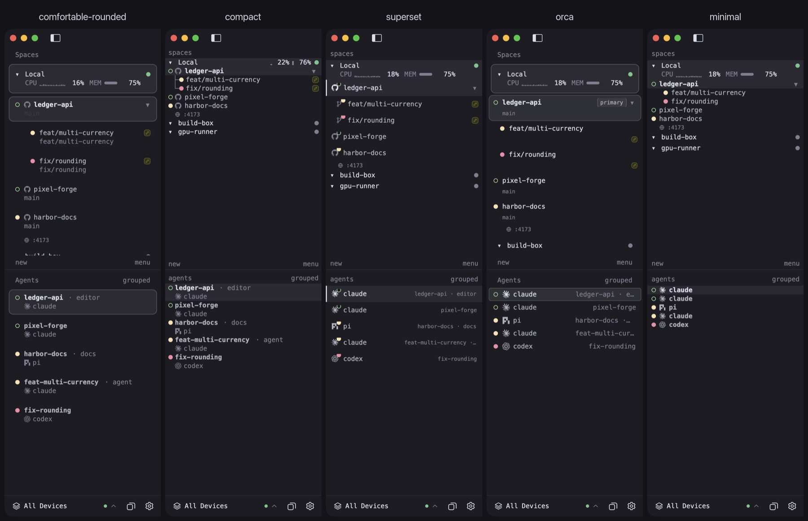

Open source · macOS, Linux and Windows
Your agents, wherever your machines are.
Sheprd is a native desktop app for running a team of coding agents. Start them on your laptop, a build box over SSH, a container or a cloud sandbox, keep them all in one window, then review, checkpoint and ship what they produce.

Prologue
Somewhere between the second and the fifth agent, the terminal stops being enough. One agent is waiting on a question, another finished an hour ago, a third is quietly burning through your weekly plan, and the branch you need to review is in a worktree whose name you no longer remember.
Sheprd is written for that moment. It does not replace your agents or your editor. It gives them a place to live: native terminals for every agent CLI you already use, a sidebar that knows which worktree each one is in, and the tools to turn their work into pull requests you trust.
Chapter I
Everyone on one board
Before you type anything, find out what needs you.
The Overview gathers agents that are waiting on you, runs that failed and work that finished while you were away. Snooze what can wait, pin what cannot, and reopen a finished Claude, Codex or opencode session where it stopped.
The status bar answers the next two questions: how much plan you have left, across more than 85 AI services, and which machine is free, with CPU, memory and disk read over SSH for remote hosts.
| status | worktree | agent | device | time |
|---|---|---|---|---|
| working | feat/multi-currency | claude | local | 04:12 |
| blocked | fix/rounding | codex | build-box | 00:47 |
| done | docs/http-surface | pi | local | 12:03 |
| working | agent/42-paginate | gemini | gpu-runner | 01:58 |
| idle | pixel-forge/main | opencode | coder-ws | — |
- build-box codex is asking a question in fix/rounding
- local checkpoint saved · feat/multi-currency · turn 14
- local pi finished docs/http-surface · review ready
Chapter II
From issue to merged pull request
Six steps, with agents doing the typing. Use the arrow keys or click a step.
Pick the work
Every open issue, from every repository in the window.
The Issues section lists GitHub, GitLab and Beads issues across the repositories your workspaces hold. Filter by label, author or text, sort by recency, and press Start agent on the one you want done.
- GitHub, GitLab (self-managed too) and Beads
.beads - Up to 32 repositories per window
- Imports agent-launcher prompt profiles
Sign in to GitHub or GitLab to read their issues. Beads needs bd on the host.
Give it a place
A fresh worktree per task, on the machine with room.
Dispatch names a branch like agent/42-multi-currency-1a2b, creates a linked worktree and nests it under its checkout in the sidebar. Smart Dispatch ranks your connected machines by spare cores and load and puts the worktree on the best one.
- Check out PRs (forks too) or issues as branches
- Trusted setup scripts run in a visible tab
- Safe close refuses to drop unpushed work
Smart Dispatch to other machines: macOS and Linux clients.

Let it work
Your agent CLI, in a native pane, with status you can trust.
Claude Code, Codex, Gemini, OpenCode, Copilot and the rest run as they do in your terminal. Sheprd paints their panes natively and shows idle, working, blocked and done from the terminal server's own snapshot, so every client agrees. The Overview lists what needs you.
- Claude Code
- Codex
- Gemini
 OpenCode
OpenCode Copilot
Copilot
Native ACP chat view (Claude, Codex, Copilot, Gemini, OpenCode, Pi) is opt-in today, for local and SSH hosts.
Read what it wrote
A pull-request style review, before there is a pull request.
Review Changes shows uncommitted or branch changes as a diff, unified or side by side, with a file tree and word-level highlights. Click any line to leave a note; Send to agent hands every note back to the agent that wrote the code.
- "Viewed" marks, search, huge-diff handling
- Annotate terminal output the same way
Review works on local checkouts.

Keep a way back
A checkpoint at every agent turn. On by default.
Each time an agent starts or finishes a turn, Sheprd snapshots the worktree into hidden Git refs, keeping the newest 50 per branch. Diff any two, or restore one from the workspace menu or the command line.
sheprd checkpoint list
sheprd checkpoint diff <id>
sheprd checkpoint restore <id> # opens the dialog; you confirmCheckpoints are unavailable from Windows clients for SSH hosts; WSL works.
Ship it
Commit, push and open the pull request from the title bar.
The Git menu summarises the working tree, then commits, pushes, creates the pull request and later merges it. Each worktree carries a PR badge colored by checks, reviews and merge state; the Pull requests board groups PRs by what they wait on.
- Comment and merge in place
- "Review with agent" runs a read-only PR review
- Linked worktrees can be removed once merged (opt-in)
Needs a GitHub sign-in. GitLab merge requests and GitHub Enterprise on the board: not yet.
Chapter III
Run them where the cores are
Your laptop is just one machine.
Saved SSH machines, WSL distributions, Docker or Podman containers, Coder workspaces and Azure sit in one sidebar beside your laptop, with their agents, load and ports. Daytona, Fly Sprites, Boat, Railway and self-hosted OpenSandbox are there too, and marked Experimental.
Cloud devices and containers need a macOS or Linux client today. WSL devices are Windows only.
Three ways to spread the work
Sheprd ranks connected machines by spare cores and load, then creates the worktree on the best one, shipping a Git bundle when the host does not have the branch.

Send one prompt to several agents and lanes, optionally spread across hosts. Compare what came back, keep one, and Sheprd removes the rest. A fan-out survives a crash.
- claude · build-box done
- codex · gpu-runner working
- gemini · local done
- Illustration
Move a worktree to another machine with its commits, uncommitted changes, tabs, splits, running programs and agent sessions (Claude Code, Codex, opencode, pi, Copilot CLI, Letta), then teleport it back.

Chapter IV
Answer the agent from the sofa
Your agents, in your pocket, with the labels left on.
Turn on remote control and your computer serves a small installable web app to your phone: chats, the questions agents are waiting on, and Web Push notifications. Approving one phone also enrols it on the SSH and cloud machines your computer uses.
- Opt-inRemote control web appAny modern phone browser, Android included. Off until you enable it.
- Opt-inPairing approved on both screensQR plus a matching six-digit code, then Allow on the desktop. Its own certificate authority, over your LAN or Tailscale.
- TestFlight betaNative iPhone and iPad appMerged home across computers, chat, dictation, a terminal with key rows, iPad split view. iOS 26. No public link yet.
- ExperimentalLive Activities, widgets, Apple Watch, nearby pairingBuilt into TestFlight builds; not yet verified on real devices.
- PlannedNative Android appAndroid uses the web app and Web Push today.
Chapter V
What works where, honestly
Most of Sheprd works on all three desktop systems. These are the differences today.
| Capability | macOS | Linux | Windows |
|---|---|---|---|
| Terminals, agents, worktrees, review, checkpoints, orchestrator, usage, mods, automations, CLI | Yes | Yes | Yes |
| Browser tabs, page annotations, VS Code and px0 tabs | Yes | System browser instead | Yes |
| Teleport, Fan-out, Smart Dispatch to other hosts | Yes | Yes | Not yet |
| Cloud devices and containers | Yes | Yes | Not yet |
| SSH machines | Yes | Yes | Yes, without connection sharing, uploads or port forwarding |
| WSL distributions as devices | — | — | Yes |
| Dock or taskbar badge | Dock | None | Taskbar |
| Launch at login | Not yet | Not yet | Yes |
| Remote control daemon for phones | Yes | Yes | Yes |
Appendix
Everything, with honest labels
Every feature with its status today. Guides and reference are in the project docs.
| ID | Area | Feature | What it does | Status | Where |
|---|
Get Sheprd.
Releases come from github.com/sheprd-labs/sheprd. Homebrew keeps its herdr-gpui token, so existing installs keep upgrading.
brew install sheprd-labs/tap/herdr-gpuimacOS 14.2 or newer, universal app. Current channel.
curl -fsSL https://sheprd.org/install.sh | shx86_64 and ARM64; APT, DNF or pacman. Current channel.
irm https://sheprd.org/install.ps1 | iexx86_64 and ARM64, per-user, no admin rights. Current channel.
nix run github:sheprd-labs/sheprdBuilds from source on x86_64 and ARM64 Linux. Current channel.
Any phone: turn on remote control in Settings and scan the QR code (opt-in).
iPhone & iPad: native app in TestFlight beta for testers; no public link yet.